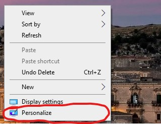

There are 2 ways to go to personalize in settings. The first way is to go to your desktop and right-click, then click Personalize.

The second way is to pull up settings, and then click Personalize.
To apply your custom cursor, you double-click the cursor state you want to apply and find the file (the files are .cur and .ani).